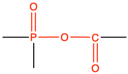

Chapter 3 Functional groups of biochemical importance
Chapter summary:
- This chapter is a concentrate of the minimal organic chemistry knowledge to understand the biochemistry of life necessary for ecological and environmental engineering
After this chapter, you should be able to:
- Draw any alkane and alkene of less than 10 carbon atoms given the name using the condensed, structural, and skeletal formulae
- Define aliphatic vs. aromatic hydrocarbons
- Draw aromatic molecules such as benzene or phenol
In the previous chapter, we started introducing some rather complex organic molecules such as glucose, an amino acid, or ATP. Looking at these molecules may be a bit scary at first glance: lots of CHONSP everywhere, sometimes linear molecules, sometimes in cycle… No worries, though, the goal of this chapter is to provide the keys to recognize some of the key features of these molecules. Once this is recognized, things can make a lot more sense. And yes, it is important to be able to draw some of these molecules. In reality, there are about half a dozen to learn by heart, and all the other ones can be derived from them for our purposes here.
In the previous chapter, we were able to allocate electrons to CHONSP atoms, depending on the bonds together. We realized that oxygen had the central role and essentially was able to take all electrons from any other atoms bonded to it. There are about a dozen functional groups of biochemical significance that are important to recognize. Most of them involve different possibilities of bonds between C and O. Why do we care? Functional groups are associated with chemical and physical properties that make organisms be strong, or rather flexible, attract or repulse water, store or release energy. That is why.
3.1 Hydrocarbon chains
First of all, just about all life biochemistry is based on the carbon atom chains. This is where everything starts. It makes a lot of sense because you will discover later that indeed, life uses carbon atoms to store and release energy. So carbon atoms have 4 valence electrons.
- They can ‘gain’ electrons if they bind with hydrogen atoms,
- can share electrons when they bind together, or
- lose their electrons when bonded to O, N, or S.
The basis of the organic chemistry needed in ecological and environmental engineering is hydrocarbons. Hydrocarbons are organic compounds consisted entirely of C and H atoms.
3.1.1 Alkanes
Alkanes nomenclature is at the basis of all the naming of organic molecules. Just about all functional groups are essentially variations from the alkane skeleton. They are classified depending on the number of carbons constituting their atom chain, and their chain is always saturated with hydrogen.
Saturated with hydrogen? What does this mean? It first means that all bonds are single σ bonds, and second, that valence electrons of the carbon not used for C-C bonds, are shared with the one valence electron of hydrogen atoms to make C-H bonds. This also means that when a carbon chain is saturated with hydrogen, the carbon atoms have all the electrons for themselves. In other words, alkanes or alkane like hydrocarbon chains are the molecules that store the most electrons.
Some hydrocarbon chains are called unsaturated when between two carbons, two valence electrons are shared between carbon atoms to form a double π bond. Each of the two carbons involved are thus called unsaturated with hydrogen. Many commercials in the western world are advertising food with unsaturated fat (Figure 3.1): it just means that some carbons of the hydrocarbon chains of the lipids in the food are unsaturated! But we will discover this a little later.
](pictures/Unsaturated-fats.jpg)
Figure 3.1: Food containing unsaturated fats, reputed to be healthier. obtained at https://healthbeat.spectrumhealth.org/healthy-fats-for-healthy-blood-lipids/
Back to our alkanes. The simplest alkane is methane, made of one carbon atom. Four hydrogen are necessary to fulfill its octet rule and to saturate its carbon (Figure 3.2).

Figure 3.2: Lewis dot structure for methane
The final formula for methane is thus CH4.
The second simplest alkane is ethane, made of two carbon atoms bonded together using two of their valence electrons to make a covalent bond. Hydrogen atoms form bonds with the three valence electrons left on each of the carbon atoms, for a final formula of C2H6, or a condensed formula of CH3-CH3 (Figure 3.3).
Figure 3.3: Lewis dot structure for ethane
The third simple alkane is propane, made of three carbon atoms in an open chain. The central carbon is bonded to the outer carbons and only has two valence electrons available to bond with H, or for the central carbon to be saturated with hydrogen (Figure 3.4). The final formula of propane is C3H8, or its condensed formula is CH3-CH2-CH3.
Figure 3.4: Lewis dot structure for propane
The fourth simple alkane is butane (C4H10) with four carbons in its saturated open chain. The two central atoms are saturated with two hydrogen atoms to form a condensed formula of CH3-CH2-CH2-CH3, or CH3-(CH2)2-CH3.
The list goes on and on as adding a carbon consists in adding a -CH2- in the middle of the previous chain and in the formula. The general formula for alkanes is thus CnH2n+2. The ‘+2’ in the formula corresponds to the third H on each of the end carbons. In English, Mary Eats Peanut Butter is used as a mnemonic to remember the first four alkanes, as each first letter is the first letter of the respective alkanes. For longer chains, the Greek prefixes are used: pentane (5), hexane (6), heptane (7), octane (8), nonane (9), and decane (10) to stop there. Table 3.1 summarizes some of the formulae and representations of alkanes.
| Number of C and formula | Prefix | Alkane name and condensed formula | Structural formula | Skeletal or Line structure |
|---|---|---|---|---|
|
1 CH4 |
meth- |
methane CH4 |

|
|
|
2 C2H6 |
eth- |
ethane CH3-CH3 |

|
|
|
3 C3H8 |
prop- |
propane CH3-CH2-CH3 |
||
|
4 C4H10 |
but- |
butane CH3-(CH2)2-CH3 |

|
|
|
5 C5H12 |
pent- |
pentane CH3-(CH2)3-CH3 |

|
|
|
6 C6H14 |
hex- |
hexane CH3-(CH2)4-CH3 |

|

|
Looking inside Table 3.1, it now appears that the same molecule can be represented in several ways. First the formula, in the first column where the number of atoms are compiled and added as a subscript near each atom. It is concise, but gives no information on how the atoms are structured together. In the third column, the condensed formula gives more information on how the hydrogen atoms are assembled relative to the carbon atoms. In the propane example, CH3-CH2-CH3 suggests that three hydrogen atoms are bonded to the end carbons, and two H are bonded to the central carbon. By convention, since the hydrogen can only make one bond, it is implied that in CH3-CH2, the hyphen ‘-’ represents the bond between carbons.
The structural formula provides a comprehensive illustration of all the bonds and all the atoms. But in organic chemistry, there are so many C and H atoms, that the structural formula becomes too crowded and not easily readable. Chemists have thus decided to simplify the formula representations as much as possible. One very common simplification is the Skeletal structure or line structure representation, illustrated in the fifth column of Table 3.1. As its names suggest, only the carbon skeleton is kept and the rest is implied. Butane for example in Table 3.1 and Figure 3.5 is represented as three angled line segments. It is implied that at the end of each segment, there is a carbon atom, and that each carbon is saturated with hydrogen. The zigzagging of the skeletal structure is also supposed to represent a little bit better how the atoms are thought to actually be intricate together. All this might appear confusing at the beginning, but this is extremely logical, and helps tremendously when writing or reading molecules important to life and ecological engineering.
Figure 3.5: Illustration of the assumptions associated with the correspondence between skeletal structure and structural formula for butane
Alkanes provide the basis or skeleton of all other nomenclatures of environmentally relevant organic chemistry. Functional groups correspond in many cases to modifications of the -CH3 or -CH2- where one or several hydrogen atoms are replaced by other atoms, and in other cases to the bonds between two simpler molecules. But before we get there, it is important to address some other important hydrocarbons.
3.1.2 Unsaturated hydrocarbons
So what about unsaturated hydrocarbons? As stated before, unsaturated implies that between two carbons, two valence electrons are shared between carbon atoms to form a double π bond. For the majority of the cases of interest for this book, there is only one double bond in the unsaturated hydrocarbon open chains. In this case, the suffix for the molecule name is changed. Instead of -ane for the alkanes, it becomes -ene for what is referred to as the alkenes. In the example of Figure 3.6, the dehydrogenation of carbons 1 and 2 leads to the formation of but-1-ene or α butylene.

Figure 3.6: Butene corresponds to the dehydrogenation of butane
If you read correctly, you just saw yet another nomenclature for the name. It turns out that 1) where the double bond is located matters very much for the molecule property, and 2) the steric configuration (where the atoms are in space relative to each other) can change dramatically as the double bond is rather rigid, and the atoms are not nearly as free to rotate around the π bond as they are with a σ bond (details in Appendix A). As a result, there are really three possible forms of butene (Figure 3.7).
Figure 3.7: The three butene isomers, respectively A: but-1-ene or α butylene,; B: (Z)-but-2-ene or cis-β-butylene; C: (E)-but-2-ene or trans-β-butylene
This is honestly outside of the scope of this book, but Figure 3.7 caption points several new nomenclatures. The ‘1’ and ‘2’ in but-1-ene and but-2-ene, and the α and β respectively point to the carbon number that has a double bond. All carbon atoms are given an ordinate number in a hydrocarbon chains (further details later). Then isomers B and C in Figure 3.7 differ by the sides on which the two end -CH3 (referred to as a radical because it is bonded to another carbon, and this radical name is methyl, as it is based on methane that would have lost a hydrogen) are located. The methyl groups are either together, or Zusammen in German, or cis, i.e., on the same side in latin, or, they are on opposite sides, or Entgegen in German, or trans, i.e., on the other side in latin. The term butylene is still used today as it is inherited from the French butylène.
Unsaturated hydrocarbon chains are rather present in lipids, but also in aromatic hydrocarbons. In the end, saturated and unsaturated hydrocarbon chains are referred to as aliphatic hydrocarbons, as opposed to aromatic hydrocarbons.
A second family of unsaturated hydrocarbon chains are the alkynes where there is a triple bond between two consecutive carbons. Honestly, this is extremely uncommon in biochemistry of life. The one rather famous molecule is acetylene, which is otherwise named ethyne, i.e., it is a two carbon chain with a triple bond (Table 3.2).
3.1.3 Aromatic hydrocarbons
Aromatic hydrocarbons or arenes are cyclic hydrocarbon chains that, as the suffix -ene implies, have double bonds between the carbons. And a hydrocarbon chain with double bonds that is aromatic is thus called an arene. Aromatic hydrocarbons are ring-shaped, have planar or flat structures, and are considered to be structurally strong molecules and difficult to hydrolyze. Many of these molecules have an aroma or specific odors, hence the name aromatic.
The strength and stability of these molecules is at the center of the stiffness of wood thanks to the lignin molecules, which contain lots of aromatic radicals. The following describes in details what at the electron orbital scale causes the aromatic hydrocarbons to have such structural stability. The quintessential model of the aromatic hydrocarbons of concern in biochemistry of life is the benzene ring. It has 6 carbons, with three double bonds, which implies that each carbon is bonded to two other carbons and is unsaturated with hydrogen and thus only has one hydrogen (Figure 3.8).
Figure 3.8: Two different resonance forms of benzene (top) combine to produce an average structure (bottom). By Edgar181 - Own work, Public Domain, https://commons.wikimedia.org/w/index.php?curid=2962329
Applying the Steric Number (SN) rule described here, SN for each carbon can be calculated as SN = (2 Carbon atoms + 1 hydrogen atom), or SN = 3. This suggests that the electron orbitals for each of the carbon atom are likely hybridized into sp2. This means that each carbon makes a σ bond with the two neighbor carbons, and with the hydrogen atom. This leaves essentially 6 p orbitals that can for double bonds as illustrated in Figure 3.8, or more likely a delocalisation of these electrons into a ring as represented in Figure 3.8. The molecular orbital theory suggests that alternating single and double bonds creates what is referred to as a conjugated pi bond system across multiple atoms, lowers the energy and stabilizes the molecule.

Figure 3.9: Benzene sp2 and p orbitals delocalization. Orbital drawning after Vladsinger, https://commons.wikimedia.org/w/index.php?curid=7531044
Aromatic molecules are very stable, and do not break apart easily to react with other substances. Many of the aromatic rings in biological systems are based on the benzene ring, to which some of the hydrogens have been replaced by -OH, -CH3, etc. In benzene, each of the carbon atoms has 5 electrons for itself, slightly less than the 6 or 7 electrons available on carbons of the alkane molecules. Five electrons is more than the average carbohydrate carbon (4), and should theoretically be rather ‘attractive’ to energy releasing processes such as microbiological respiration. However, the delocalization of the p orbitals makes this molecule very stable and very difficult to break apart, and therefore rather ‘unattractive’ instead for energy release purposes, but extremely attractive for structural strength ones.
Etymology Corner
The prefix benz- in benzene is associated with the benzoin resin, which is a dried exudation from pierced bark of trees of the genus Styrax (Styracaceae) mostly native from East and Southeast Asia (Sumatra, Java, Thailand), and used in perfumes, some kinds of incense, as a flavoring, and medicine (Wikipedia contributors 2019b). Benzoin resin is known from European pharmacists and perfumers since the 15th century. The word benzoin seems to be an oral transcription of the Arabic Lubān jāwī (لبان جاوي), which translates into Javan Frankincense (Wikipedia contributors 2019b), suggesting that the Arabs have known and traded this resin for a long time, along with many other types of Frankincense. To make things more complete and possibly confusing, the French chemist Auguste Laurent, named the same benzene substance phène in reference to the Greek word φαινω which means ‘I light’ as this substance was obtained from gases used for street lighting (Laurent 1836). This is the reason for the word phenol otherwise referred to as hydroxy-benzene and for the radical -phenyl described below.
It turns out that in addition to purely hydrocarbon arenes, there are aromatic compounds with other atoms than just C and H, that are derived from benzene, and are non-benzene based. There are referred to as heteroarenes or heterocyclic compounds. In simple rings, there tend to be 5 to 6 atom rings where most of the atoms are carbons. It is not possible to avoid these because they play a crucial role in the chemistry of life, particularly for RNA and DNA. The rules for aromaticity are described in details by Hückel’s rules, but for this book, one should remember that aromatic compounds are cyclic, planar, and have delocalized π orbitals which gives them strength and stability.
Figure 3.10: Homoarene benzene and three heteroarenes or heterocyclic hydrocarbons, including pyrimidine, imidazole, the combination of both forming purine. (with the H added, top, and without the H, bottom)
Notice in Figure 3.10 that it is implied that there is a lone pair of electrons not part of any covalent bond for the nitrogen atoms. Each nitrogen atom must always have three bonds in organic molecules. Replacing two of the benzene carbons with nitrogen atoms yields pyrimidine. Additions of simple radicals and functional groups to this molecule is at the basis of the nitrogeneous bases named pyrimidines used in the RNA and DNA. Removing a carbon from pyrimidine yields imidazole, and combining a pyrimidine with an imidazole yields a purine. And yes, purines are the other types of nitrogeneous bases used in the RNA and DNA. Important aromatic molecules indeed!
Equipped with the alkane, alkene, and aromatic hydrocarbon skeleton, it is now time to explore the common and important functional groups relevant to the biochemistry of life. There are essentially two types of functional goups, the ones existing on elementary alkane skeleton hydrocarbon, and the ones resulting from the binding of elementary hydrocarbon chains. The following paragraphs present the important functional groups on elementary hydrocarbons.
3.2 Hydroxyl and carbonyl functional groups
We have now used the word radical several times. Technically in chemistry, a radical is an atom, molecule, or ion that has an unpaired valence electron. The radical hydroxyl is and misses one valence electron. The hydroxy (without the ‘l’) functional group is -OH, implying that the hydroxyl radical is bonded to another carbon. Hydroxy groups are very common in biochemistry of life. In reality, although the difference between hydroxyl and hydroxy group seems to be the proper nomemclature agreed upon by the International Union of Pure and Applied Chemistry - IUPAC, most chemistry books often used the expression ‘hydroxyl group’ and use the suffix ‘-yl’ for functional groups.
The carbonyl group is composed of a carbon atom double-bonded to an oxygen atom: C=O. It is also very common in organic chemistry of life.
Most chemistry books list a litany of functional groups, and students are expected to learn them by heart. For a chemistry book, this makes a lot of sense. But for an environmentally oriented book, one must find another more attractive method. In the previous chapter, we allocated electrons around atoms and we saw that oxygen is the electron ‘kleptomaniac’: it ‘steals’ all the electrons from the other atoms to which it is bonded. The first four oxygen and hydroxyl based functional groups include alcohol, aldehyde, carboxy, and ketone. One must see them as -CH3 or -CH2- groups from alkanes that would have lost 2, 4, 6, and 2 electrons, respectively, to oxygen atoms (Figure ??).
Figure 3.11: Functional groups alcohol, aldehyde, carboxy, and ketone, viewed as methyl groups that have lost respectively 2, 4, 6, and 2 electrons to oxygen
In the top row of Figure ??, the electrons the carbon atom has for itself are in blue and amount to 7 for the -CH3 radical and 6 for the -CH2-. Although this does not describe the actual process, the formation of an alcohol functional group effectively corresponds to the stealing of 2 electrons by oxygen from a carbon atom. Oxygen always has 8 electrons for itself in an organic molecule (represented in red dots in Figure ??). The stealing of 4 electrons by oxygen yields from -CH3, an aldehyde functional group, and from -CH2-, a ketone functional group. The stealing of 6 electrons by oxygen on a -CH3 group effectively yields a carboxy group, which one could view as an aldehyde functional group that has lost 2 more electrons to oxygen. This essentially corresponds to variable oxidation states of the carbon. So seeing functional groups within that oxidation state or electron allocation framework makes a lot more sense.
3.3 Alcohol functional group
In chemistry, an alcohol is any organic compound in which the hydroxy functional group (–OH) is bound to a carbon. Most of alcohol groups in organic chemistry are secondary alcohols, which means that the alcohol functional groups -CHOH- are usually embedded in longer carbon chains. Chemists make differences between the number of hydrogens that are bonded to the -COH radical (Figure 3.12). As presented in Figure ??, the carbon of alcohol functional groups still have 4 electrons for themselves, which corresponds to the number of valence electrons on C at the natural state. The glucose molecule, out of 6 carbon atoms, has 5 alcohol functional groups! On the nomenclature side, the condensed formular for the primary structure is -CH2OH, and for the secondary structure is -CHOH-. The hydroxyl radical OH is purposely separated from the rest to point out that this is an alcohol functional group.

Figure 3.12: Generic alcohol functional group and the idedentified primary, secondary, and tertiary alcohols
3.4 Aldehyde functional group
Aldehyde functional group consists in a carbonyl group with the carbon atom also bonded to hydrogen. This implies that aldehyde groups are necessarily at the end of an hydrocarbon chain. To differentiate between alcohol and aldehyde groups, the condensed formula for an aldehyde is -CHO. The carbon of an aldehyde functional group has lost 4 electrons to oxygen, and only has 3 for itself (Figure 3.13). Because of the electronegativity of the carbonyl group, aldehyde group are rather polarized, which makes them rather soluble in polar solvent such as water.

Figure 3.13: Generic aldehyde functional group with the allocation of the electrons to oxygen and carbon atoms
3.5 Ketone functional group
Ketone functional group consists in a carbonyl group included in the middle of a hydrocarbon chain. The condensed formula for a ketone is -CO-. The carbon of a ketone functional group has lost 4 electrons to oxygen, and only has 2 for itself (Figure 3.14).

Figure 3.14: Generic ketone functional group with the allocation of the electrons to oxygen and carbon atoms
3.6 Carboxyl functional group
The carboxyl group (properly called carboxy group by the IUPAC, but every text book uses interchangingly carboxyl radical and carboxyl group), is an aldehyde group that would have lost two of its electrons to oxygen via an hydroxyl group (Figure 3.15). The condensed formula for a carboxyl group is -COOH. The carboxyl group is always at the end of a hydrocarbon chain, in which case the group is referred to as a carboxylic acid. Yes, you read correctly, with the carboxyl group, we are enterring the world of acid and base, pH, etc. But why so?
Figure 3.15: Generic carboxyl functional group with the allocation of the electrons to oxygen and carbon atoms
Looking at the top row of Figure 3.15, it is obvious that there is plethora of electrons for the carboxyl group, all captured by the two oxygen atoms. However, the level of energy to maintain contiguous double bond of the carbonyl and the single bond of the hydroxyl groups is higher than when the hydroxyl group loses a proton H+, leaving the oxygen of the hydroxyl group to be negative. Without the hydrogen, the extra electron can, with the π electrons of the double bond of the carbonyl group, be delocalized (bottom row of Figure 3.15). This is not too distant from the aromatic molecules, in that the -COO- end is rather stable. This explains why the carboxyl group behaves as an acid as it can readily release an H+ in solution. The stability of the carboxylic acid form (-COOH) versus its conjugate base form (carboxylate -COO-) depends on the pH of the solution and is discussed in the dedicated acid-base chapter. Because of the density of electrons near the oxygen atoms, the functional group is very polar, even in its acid form, and rather hydrophylic.
3.7 Amine functional group
In organic chemistry, amines are compounds and functional groups that contain a basic nitrogen atom with a lone pair. Amines are formally derivatives of ammonia, wherein one or more hydrogen atoms have been replaced by a substituent such as an alkyl or aryl group (Wikipedia contributors 2019c).
Amines, very much like alcohols, are classified into primary, secondary, and tertiary amines, depending on the number of alkyl groups bonded to the nitrogen atom. The substituent -NH2 is called an amino group, hence the name amino-acids described in the next chapter (Figure 3.16). The nitrogen of amines almost always has 8 electrons for itself in organic molecules. For primary producers, amines are formed and incorporated into organic molecules directly from the uptake of ammonium, or, after the reduction of nitrate uptaken. Notice the tetraedral shape of ammonia and amines
Figure 3.16: Ammonia and conjugate acid ammonium, and identified primary, secondary, and tertiary amines
Etymology Corner
The suffix of amine comes from the French suffix -ine, used to form words for derived substances. Amines are thus derived substances of ammonia or ammonium. Both words in English come from the sal ammoniac which is a rare natural salt made of ammonium chloride (NH4Cl). In history, this salt was exported from the hammoniacum region of the Roman province of Cyrenaica in present-day Libya. The Roman name hammoniacum actually comes from the Greek word Ammon. The Greeks have given this name to the Siwa oasis, known for its salt exports, in the middle of the vast sea of sand of the Lybian desert. The word Ammon is a contraction of the greek word Ammos which means sand, and the name of the god from the nomadic tribes worshipped at Siwa, the Ram God Amon, identified at one point with the Egyptian god Amun Ra, and eventually revered as the king of gods. The mix of the part-Greek, part-Egyptian, and part-Libyan Ram god with the greek Zeus, lead to Zeus-Ammon or Jupiter Ammon, god with a human head with the horns of a ram. The oracle of the god Ammon was located in the Siwa oasis. The sal ammoniac was particularly used for worshipping at that temple. The Greek word Ammon seems to be a voluntary play on words with Ammos, which means sand. So Ammon was the Zeus of the sand. And this is why there are two ‘m’ to the words ammonia and ammonium. It is unclear why the ‘c’ of ammoniac was dropped in English. The ‘c’ reappears in the expression Total Ammoniacal Nitrogen or TAN, which is used in some analytical laboratories and corresponds to the summation of ammonia and ammonium forms in solution.
3.8 Thiol functional group
Thiols are the sulfur analogue of alcohols (that is, sulfur takes the place of oxygen in the hydroxyl group of an alcohol), and the word is [the combination] of “thio-” + “alcohol”, with the first word deriving from Greek θεῖον (theion) meaning “sulfur” (Wikipedia contributors 2019d).
The analogue of the hydroxyl group (-OH) in alcohols, is the sulfanyl group (-SH) in thiols.
Figure 3.17: Thiol group (left) being the analogue of the hydroxyl group of an alcohol (right)
As the functional group of the amino acid cysteine, the thiol group plays a very important role in biology. When the thiol groups of two cysteine residues (as in monomers or constituent units) are brought near each other in the course of protein folding, an oxidation reaction can generate a cysteine unit with a disulfide bond (−S−S−). Disulfide bonds can contribute to a protein’s tertiary structure if the cysteines are part of the same peptide chain, or contribute to the quaternary structure of multi-unit proteins by forming fairly strong covalent bonds between different peptide chains (Wikipedia contributors 2019d). This is presented in more details in the dedicated chapter on proteins
The functional groups of importance are summarized in Table 3.2 and each is detailed thereafter.
| Functional group name | Functional group structure | Structural formula and name | Skeletal and condensed formula |
|---|---|---|---|
| Hydrocarbons | |||
| saturated alkane bond |
 ethane |
CH3-CH3 |
|
| alkene double bond |

|
 ethene |
CH2=CH2 |
| alkyne triple bond |
ethyne or acetylene |
 CH≡CH |
|
| Functional groups resulting from the replacement of one or several H on elementary hydrocarbon chains | |||
| hydroxyl |

|
||
| sulfanyl |

|
||
| amine |
ethyl amine |
CH3-CH2NH2 |
|
| alcohol |

|
ethanol |
 CH3-CH2OH |
| thiol |

|
 ethanethiol |
CH3-CH2SH |
| carbonyl | |||
| acyl |

|
||
| aldehyde |

|
ethanal |
 CH3-CHO |
| ketone |
propanone or acetone |
 CH3-CO-CH3 |
|
| carboxylic acid |

|
 ethanoic acid or acetic acid |
 CH3-COOH |
| amide |

|
ethanamide |
|
| Functional groups resulting from bonds between elementary molecules | |||
| ester |

|
propyl ethanoate |
 CH3CO-O-CH2-CH2-CH3 |
| phosphoester |

|
 methyl phosphate |
|
| thioester |
S-ethyl ethanethioate |
CH3-CO-S-CH2-CH3 |
|
| ether |
 diethyl ether |
CH3-CH2-O-CH2-CH3 |
|
| anhydride | |||
| phosphoanydride |  |
 diphospho anhydride or pyrophosphate |
|
.Thio deriving from Greek θεῖον (theion) meaning “sulfur”
THIS CHAPTER IS UNDER CONSTRUCTION
References
Laurent, Auguste. 1836. “Sur La Chlorophénise et Les Acides Chlorophénisique et Chlorophénèsique.” Edited by Gay-Lussac and Arago. Annales de Chimie et de Physique 63: 27–45. https://play.google.com/store/books/details?id=f3Y7AQAAMAAJ.
Wikipedia contributors. 2019b. “Styrax.” https://en.wikipedia.org/w/index.php?title=Styrax&oldid=891144643. https://en.wikipedia.org/w/index.php?title=Styrax&oldid=891144643.
Wikipedia contributors. 2019c. “Amine.” https://en.wikipedia.org/w/index.php?title=Amine&oldid=917446282. https://en.wikipedia.org/w/index.php?title=Amine&oldid=917446282.
Wikipedia contributors. 2019d. “Thiol.” https://en.wikipedia.org/w/index.php?title=Thiol&oldid=918223492. https://en.wikipedia.org/w/index.php?title=Thiol&oldid=918223492.